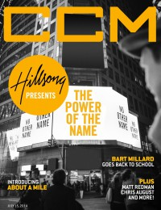

Hillsong
 |
| January 2010 Charisma |
 |
| 15 July 2014 CCM Digital |
Media coverage:
- Jan 2010 in Charisma "A Sound From Down Under", by Nicole Partridge
- Jul 2010 in CCM Digital "Worship: Beauty Before the Cross: Encountering Christin Worship", by Emily Hoernschemeyer
- Jan 2011 in Relevant "How A Local Phenomenon Became A Global Movement... Without Losing Its Roots", by Adam Smith
- Jun 2012 in CCM Digital "Musicians Corner: In the Studio: Hillsong", by Ben Fielding
- Jul 2012 in CCM Digital "The Way We Worship... and the songs that brought us here", by Caroline Lusk
- Nov 2013 in CCM Digital "Worship: The Sound of a New Generation", by Caroline Lusk
- 15 Jul 2014 in CCM Digital "Hillsong Presents The Power of The Name", by Caroline Lusk
- 1 Nov 2014 in CCM Digital "Tour Spotlight: No Other Name Tour, Willow Creek Community Church, South Barrington, IL", by Andy Argyrakis
Albums & reviews:
1994: People Just Like Us
1996: Shout to the Lord
2000: For This Cause: Hillsong Live Worship with Darlene Zschech
2014: No Other Name
2016: OPEN HEAVEN/ River Wild
2018: The Peace Project
2018: There Is More
1996: Shout to the Lord
- Jun 1996 in Charisma, by Doug Joseph
- Nov 1998 in Worship Leader, by Brian Casey
2000: For This Cause: Hillsong Live Worship with Darlene Zschech
- Dec 2000 in CCM, by Dave Urbanski
- Mar 2001 in YouthWorker, by Dave Urbanski
- Nov 2001 in CBA Marketplace, by Rhonda Owens
- Feb 2002 in CCM, by John M De Marco
- Nov 2002 in Charisma, by John M De Marco
- Jul 2003 in YouthWorker, by Dave Urbanski
- Sep 2003 in Worship Leader, by Sue Thompson
- Nov 2004 in YouthWorker, by Dave Urbanski
- Nov 2004 in Worship Leader
- Nov 2004 in Charisma, by DeWayne Hamby
- May 2004 in Charisma, by Dan MacIntosh
- May 2004 in Worship Leader
- Oct 2005 in Worship Leader
- Dec 2005 in Charisma, by Matt Fehrmann
- Mar 2006 in YouthWorker, by Dave Urbanski
- Feb 2005 in CBA Marketplace, by Matthew McEntyre
- Feb 2005 in CCM, by David McCreary
- Mar 2005 in Worship Leader
- May 2005 in YouthWorker, by Dave Urbanski
- May 2006 in Charisma, by DeWayne Hamby
- May 2006 in Worship Leader
- Sep 2006 in Worship Leader
- Dec 2006 in CCM, by Andree Farias
- Dec 2006 in Charisma, by Kristi Shores
- Sep 2007 in Worship Leader
- Nov 2007 in CCM, by Jackie A. Chapman
- Jan 2008 in Charisma, by Jevon Oakman Bolden
- Sep 2008 in Charisma, by Jimmy Stewart
- Sep 2008 in Worship Leader
- Sep 2009 in Worship Leader, by Andrea Hunter
- Nov 2009 in Charisma, by Faith L. Lowe
- Jan 2010 in Living With Teenagers, by Randy Williams
- Jun 2010 in Charisma
- Jun 2010 in CCM Digital, by Matt Conner
- Aug 2010 in Worship Leader, by Jeremy Armstrong
- Aug 2010 in Worship Leader, by Dave Haney
- Nov 2011 in Worship Leader, by Jeremy Armstrong
- Dec 2011 in Charisma
- Jul 2011 in Worship Leader, by Andrea Hunter
- Jul 2011 in CCM Digital, by Matt Conner
- Jul 2012 in Worship Leader, by Jeremy Armstrong
- Aug 2012 in CCM Digital, by Matt Conner
- Oct 2012 in CCM Digital, by Andy Argyrakis
- Nov 2012 in Worship Leader, by Jeremy Armstrong
- Jul 2013 in HM, by Sarah Brehm
- Jul 2013 in Charisma, by DeWayne Hamby
- Jul 2013 in Worship Leader, by Mike Pueschell
- Aug 2013 in CCM Digital, by Grace S. Aspinwall
2014: No Other Name
- Jul 2014 in HM, by Justin Mabee
- Sep 2014 in Worship Leader, by Andrea Hunter
2016: OPEN HEAVEN/ River Wild
2018: The Peace Project
2018: There Is More
Award Summary (Nominations / Wins)
Dove Awards- 1997 Dove Awards
- Praise & Worship Album: Shout to the Lord
- Praise & Worship Album: Shout to the Lord 2000
- Praise & Worship Album: You Are My World
- Long Form Music Video: You Are My World
- Praise & Worship Album: Blessed
- Inspirational Recorded Song: "My Hope"
- Long Form Music Video: Faith+Hope+Love
- Praise & Worship Album: A Beautiful Exchange
- Long Form Music Video: A Beautiful Exchange
- Inspirational Album: God is Able
- Long Form Music Video: Cornerstone [video]
- Christmas Album: We Have a Savior
- Long Form Music Video: Glorious Ruins
- Long Form Music Video: No Other Name
- Inspirational Recorded Song: "This I Believe (The Creed)"
- Worship Album: No Other Name
- Song: "Touch The Sky"
- Inspirational Album: OPEN HEAVEN/ River Wild
- Inspirational Recorded Song: "O Praise The Name (Anastasis)"
- Song: "What A Beautiful Name"
- Long Form Music Video: Let There Be Light
- Worship Song: "What A Beautiful Name"
- Worship Album: Let There Be Light
- Long Form Music Video: There Is More
- Worship Album: There Is More
- Christmas / Special Event Album: The Peace Project
- Worship Recorded Song: "Who You Say I Am"
- Song: "Who You Say I Am"
- Worship Song: "Who You Say I Am"
- Worship Recorded Song: "Who You Say I Am (Studio Version)"
- 2017 Grammy Awards
- Best Contemporary Christian Music Performance/Song: "What A Beautiful Name"
© 2011 CMnexus. Last updated September 2019. Contact: editor -AT- cmnexus -DØT- org About